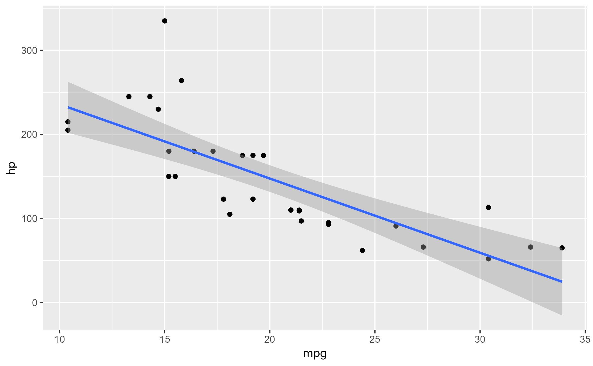

Retrieve the trace dump created by the last ggtrace()
last_ggtrace()
Value
A list
See also
Examples
#> [[1]] #> `{` #> #> [[2]] #> data <- flip_data(data, flipped_aes) #> #> [[3]] #> if (length(unique(data$x)) < 2) { #> return(new_data_frame()) #> } #> #> [[4]] #> if (is.null(data$weight)) data$weight <- 1 #> #> [[5]] #> if (is.null(xseq)) { #> if (is.integer(data$x)) { #> if (fullrange) { #> xseq <- scales$x$dimension() #> } #> else { #> xseq <- sort(unique(data$x)) #> } #> } #> else { #> if (fullrange) { #> range <- scales$x$dimension() #> } #> else { #> range <- range(data$x, na.rm = TRUE) #> } #> xseq <- seq(range[1], range[2], length.out = n) #> } #> } #> #> [[6]] #> if (identical(method, "loess")) { #> method.args$span <- span #> } #> #> [[7]] #> if (is.character(method)) { #> if (identical(method, "gam")) { #> method <- mgcv::gam #> } #> else { #> method <- match.fun(method) #> } #> } #> #> [[8]] #> if (identical(method, mgcv::gam) && is.null(method.args$method)) { #> method.args$method <- "REML" #> } #> #> [[9]] #> base.args <- list(quote(formula), data = quote(data), weights = quote(weight)) #> #> [[10]] #> model <- do.call(method, c(base.args, method.args)) #> #> [[11]] #> prediction <- predictdf(model, xseq, se, level) #> #> [[12]] #> prediction$flipped_aes <- flipped_aes #> #> [[13]] #> flip_data(prediction, flipped_aes) #>ggtrace(StatSmooth$compute_group, trace_steps = 12, trace_exprs = quote(head(prediction))) ggplot(mtcars, aes(mpg, hp)) + geom_point() + geom_smooth(method = 'lm')#>#> Tracing method compute_group from <StatSmth> ggproto. #> #> [Step 12]> head(prediction) #> x y ymin ymax se #> 1 10.40000 232.2531 201.8649 262.6414 14.87963 #> 2 10.69747 229.6265 199.9139 259.3392 14.54880 #> 3 10.99494 227.0000 197.9569 256.0430 14.22094 #> 4 11.29241 224.3734 195.9934 252.7534 13.89627 #> 5 11.58987 221.7468 194.0230 249.4707 13.57502 #> 6 11.88734 219.1203 192.0450 246.1956 13.25743 #> #> Untracing method compute_group from <StatSmth> ggproto. #> Call `last_ggtrace()` to get the trace dump.last_ggtrace()#> $`[Step 12]> head(prediction)` #> x y ymin ymax se #> 1 10.40000 232.2531 201.8649 262.6414 14.87963 #> 2 10.69747 229.6265 199.9139 259.3392 14.54880 #> 3 10.99494 227.0000 197.9569 256.0430 14.22094 #> 4 11.29241 224.3734 195.9934 252.7534 13.89627 #> 5 11.58987 221.7468 194.0230 249.4707 13.57502 #> 6 11.88734 219.1203 192.0450 246.1956 13.25743 #>ggtrace( StatSmooth$compute_group, trace_steps = 12, trace_exprs = quote(prediction), .print = FALSE ) ggplot(mtcars, aes(mpg, hp)) + geom_point() + geom_smooth(method = 'lm')#>#> Tracing method compute_group from <StatSmth> ggproto. #> #> [Step 12]> prediction #> #> Untracing method compute_group from <StatSmth> ggproto. #> Call `last_ggtrace()` to get the trace dump.last_ggtrace()#> $`[Step 12]> prediction` #> x y ymin ymax se #> 1 10.40000 232.25311 201.864857 262.64137 14.879628 #> 2 10.69747 229.62655 199.913937 259.33916 14.548798 #> 3 10.99494 226.99998 197.956941 256.04302 14.220943 #> 4 11.29241 224.37342 195.993438 252.75339 13.896274 #> 5 11.58987 221.74685 194.022962 249.47074 13.575019 #> 6 11.88734 219.12028 192.045006 246.19556 13.257427 #> 7 12.18481 216.49372 190.059018 242.92842 12.943768 #> 8 12.48228 213.86715 188.064401 239.66990 12.634334 #> 9 12.77975 211.24059 186.060505 236.42067 12.329443 #> 10 13.07722 208.61402 184.046625 233.18142 12.029441 #> 11 13.37468 205.98746 182.021995 229.95292 11.734703 #> 12 13.67215 203.36089 179.985784 226.73600 11.445636 #> 13 13.96962 200.73433 177.937092 223.53156 11.162680 #> 14 14.26709 198.10776 175.874947 220.34057 10.886311 #> 15 14.56456 195.48119 173.798297 217.16409 10.617044 #> 16 14.86203 192.85463 171.706012 214.00325 10.355434 #> 17 15.15949 190.22806 169.596876 210.85925 10.102074 #> 18 15.45696 187.60150 167.469590 207.73340 9.857601 #> 19 15.75443 184.97493 165.322771 204.62709 9.622693 #> 20 16.05190 182.34837 163.154954 201.54178 9.398066 #> 21 16.34937 179.72180 160.964599 198.47900 9.184476 #> 22 16.64684 177.09524 158.750096 195.44037 8.982709 #> 23 16.94430 174.46867 156.509785 192.42755 8.793579 #> 24 17.24177 171.84210 154.241966 189.44224 8.617919 #> 25 17.53924 169.21554 151.944924 186.48615 8.456567 #> 26 17.83671 166.58897 149.616958 183.56099 8.310358 #> 27 18.13418 163.96241 147.256409 180.66841 8.180103 #> 28 18.43165 161.33584 144.861699 177.80999 8.066575 #> 29 18.72911 158.70928 142.431367 174.98719 7.970488 #> 30 19.02658 156.08271 139.964114 172.20131 7.892481 #> 31 19.32405 153.45615 137.458835 169.45346 7.833093 #> 32 19.62152 150.82958 134.914661 166.74450 7.792750 #> 33 19.91899 148.20301 132.330987 164.07504 7.771748 #> 34 20.21646 145.57645 129.707492 161.44541 7.770245 #> 35 20.51392 142.94988 127.044154 158.85561 7.788250 #> 36 20.81139 140.32332 124.341247 156.30539 7.825631 #> 37 21.10886 137.69675 121.599333 153.79417 7.882111 #> 38 21.40633 135.07019 118.819245 151.32113 7.957284 #> 39 21.70380 132.44362 116.002051 148.88519 8.050625 #> 40 22.00127 129.81706 113.149024 146.48509 8.161512 #> 41 22.29873 127.19049 110.261602 144.11938 8.289241 #> 42 22.59620 124.56392 107.341348 141.78650 8.433046 #> 43 22.89367 121.93736 104.389910 139.48481 8.592119 #> 44 23.19114 119.31079 101.408986 137.21260 8.765631 #> 45 23.48861 116.68423 98.400291 134.96816 8.952741 #> 46 23.78608 114.05766 95.365527 132.74980 9.152616 #> 47 24.08354 111.43110 92.306364 130.55583 9.364438 #> 48 24.38101 108.80453 89.224418 128.38464 9.587415 #> 49 24.67848 106.17797 86.121242 126.23469 9.820787 #> 50 24.97595 103.55140 82.998313 124.10449 10.063832 #> 51 25.27342 100.92483 79.857026 121.99264 10.315866 #> 52 25.57089 98.29827 76.698693 119.89784 10.576246 #> 53 25.86835 95.67170 73.524544 117.81886 10.844371 #> 54 26.16582 93.04514 70.335721 115.75455 11.119680 #> 55 26.46329 90.41857 67.133288 113.70386 11.401654 #> 56 26.76076 87.79201 63.918230 111.66578 11.689810 #> 57 27.05823 85.16544 60.691456 109.63943 11.983702 #> 58 27.35570 82.53888 57.453809 107.62394 12.282919 #> 59 27.65316 79.91231 54.206064 105.61856 12.587080 #> 60 27.95063 77.28574 50.948935 103.62255 12.895835 #> 61 28.24810 74.65918 47.683080 101.63528 13.208864 #> 62 28.54557 72.03261 44.409105 99.65612 13.525868 #> 63 28.84304 69.40605 41.127568 97.68453 13.846575 #> 64 29.14051 66.77948 37.838982 95.71998 14.170734 #> 65 29.43797 64.15292 34.543820 93.76201 14.498113 #> 66 29.73544 61.52635 31.242518 91.81018 14.828498 #> 67 30.03291 58.89979 27.935476 89.86410 15.161694 #> 68 30.33038 56.27322 24.623066 87.92337 15.497518 #> 69 30.62785 53.64665 21.305628 85.98768 15.835804 #> 70 30.92532 51.02009 17.983478 84.05670 16.176397 #> 71 31.22278 48.39352 14.656908 82.13014 16.519155 #> 72 31.52025 45.76696 11.326187 80.20773 16.863946 #> 73 31.81772 43.14039 7.991564 78.28922 17.210646 #> 74 32.11519 40.51383 4.653271 76.37438 17.559144 #> 75 32.41266 37.88726 1.311522 74.46300 17.909334 #> 76 32.71013 35.26070 -2.033485 72.55488 18.261119 #> 77 33.00759 32.63413 -5.381564 70.64982 18.614409 #> 78 33.30506 30.00756 -8.732544 68.74767 18.969119 #> 79 33.60253 27.38100 -12.086265 66.84826 19.325171 #> 80 33.90000 24.75443 -15.442579 64.95145 19.682493 #># }